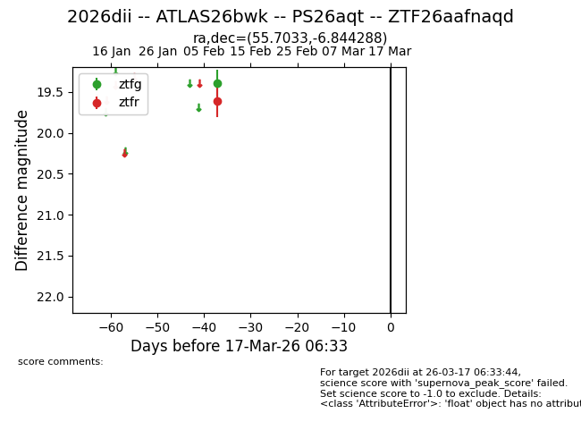
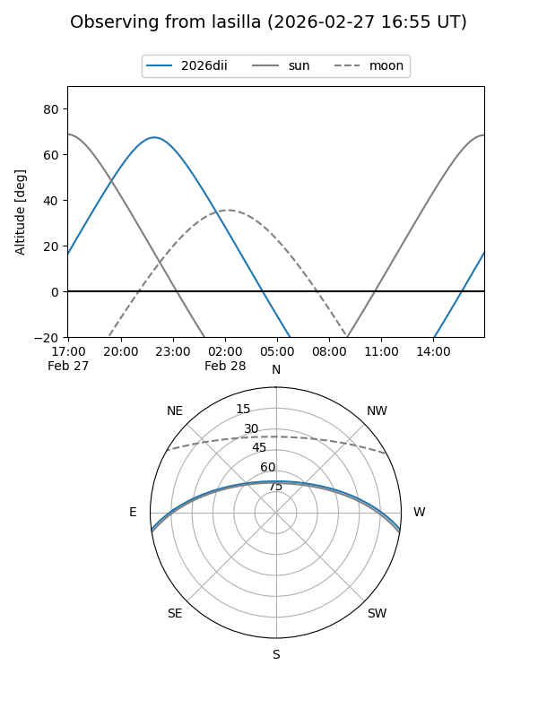
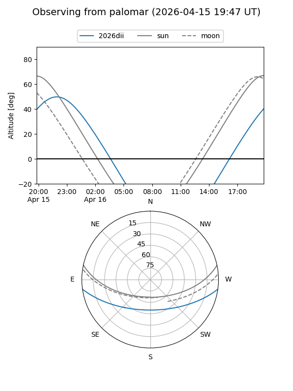

2026dii
Target 2026dii at 2026-03-17 06:35
Aliases and brokers:
FINK: link
Lasair: link
ALeRCE: link
TNS: link
YSE: link
alt names
ZTF26aafnaqd (ztf,fink_ztf)
2026dii (tns,yse)
ATLAS26bwk (atlas)
PS26aqt (panstarrs)
Coordinates:
equatorial (ra, dec) = 55.7033,-6.84429
equatorial (HMS+DMS) = 03:42:48.80,-06:50:39.44
galactic (l, b) = (194.4332,-44.60684)
Flags:
Photometry:
last ztfg=19.40, ztfr=19.61
1 ztfg, 1 ztfr detections
Lightcurve

Visibility


Additional plots